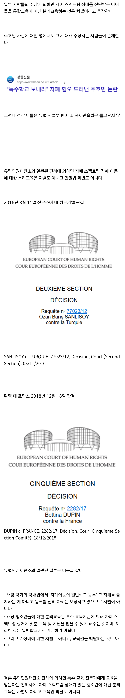

유럽인권재판소에선 이미 2016-2018년에 '자폐 스펙트럼 장애 청소년을 통합교육이 아닌 분리교육 시키는 것은 차별이나 교육권 침해가 아니고, 오히려 당사자의 교육권을 보장하는 것이다'라고 판결났다고 함
통합교육 반대하는 게 인권법 위반이 아닌거임

유럽인권재판소에선 이미 2016-2018년에 '자폐 스펙트럼 장애 청소년을 통합교육이 아닌 분리교육 시키는 것은 차별이나 교육권 침해가 아니고, 오히려 당사자의 교육권을 보장하는 것이다'라고 판결났다고 함
통합교육 반대하는 게 인권법 위반이 아닌거임
통합교육해라 = 물론 내 자식은 국제 학교다닐꺼다. 니들이 감당해라.
통합교육=호민하다
분리하는게 맞지.같이 수업들었을때 너무 고통이었다
자폐아랑 중2때 같은 반, 걍 무조건 분리 찬성임. 학기 중에 걍 지옥임. 의자. 책상 던지고 오줌싸고 몸에서 냄새나고. 힘은 존나 쎄서 오랑우탄급임. 저렇게 개지랄 하면 선생이 말려? 학생들도 같이 말려야함. 뭔 씨발 학생들이 병원인력도 아니고 하루이틀도 아니고 학기 내내 이지랄. 피해자 입장에서는 좀 심하게 말해서 자폐 부모가 교실에 던져두고 방임한다고 생각이 들 정도임. 당연히 교실 면학 분위기 개씹창 내놓음. 자폐 부모들은 꼭 알아야해. 자기들 방임으로 피해보는 건 일반 학생들이라는걸.
그리고 자폐아 사회성 기르려고 보낸다 하는데 학기 내내 행동 보면 헛소리임.
존나패면 조용해짐
평범한 애들이랑 같이 수업하면 나머지 평범한애들 교육권은 누가 보장해주나?
통합교육 운운하는 새끼들은 어디 대안학교를 나왔거나 장애인 없는 귀족학교라도 나왔나 싶음
모두에게 비극이란 걸 모르나?
자폐 정도에 따라 통합으로 할수 있는거지 무조건 통합 할 이유가 없지
솔직히 분리가 맞는 거 같음
일반학생들이랑 같이 수업들으면 장애인들이 따라올수나 있음?
중학생때 특히 같은반에 놔두면 안되는게 안보이면 안했을 학폭도 보이니까 저지름 자폐아 본인을 위해서라도 분리 하는게 좋아보임
몇몇을 제외하곤 자폐 부모들도 특수학교 보내고 싶어해
근데 티오가 없어 진짜로
이거 원 출처 어디임? 묘하게 틀어서 이야기를 하는 것 같은데...?
통합교육 하면 뭔가 긍정적인 영향이 있을거라는 약간 근거는 없는 믿음 때문에 고집하는 것 아닌가
수호단 ㅂㄷㅂㄷ
그런데 자폐애가 같은 교실에 있으면 정상인 애들 수업방해 하는 거 아님? 제도적 장치라 필요하긴할듯
사실 답은 이미 나왔지
그 만화가처럼 일부 이레귤러가 있는 것 뿐임
애보다 하루 더 살기만 소망하는 사람들인데
병신이네 뭐네 욕하는 건 너무하니까
씨발 초딩 중딩때 반장이라고 급식먹을때 선생님이 맨앞에있고 반장이 선생 옆 장애인애도 선생 옆해서 밥먹게했는데 아직도 생각나네 얼굴에 콧물범벅으로 해놓고 밥쳐먹는애때문에 1년간 밥맛없이 먹었던 기억이..
나도 비슷한 경험 있음 이새끼가 급식 처먹을때마다 반찬을 항상 손으로 집어서 쪽쪽 빨아먹더라 선생이 하지말라 해도 잠깐이고 또 빨아먹음 ㅅㅂ
다들 특수학교 가면 좋긴한데 근처사는집 아니면 몇시간씩 걸리는 경우 까지도 발생하는게 진짜 큰 걸림돌인듯
이게 맞지 오히려 반대임 반에 자폐아 한명 때문에 나머지 정상아동들이 피해보니까 분리교육은 필수임
중학교 다닐때 자폐아랑 같은 반 된적 있었는데 얘는 되게 착하고 순해서 애들이 잘챙겼음 근데 옆반 자폐아는 맨날 우리반 자폐아 때리고 지네반에서도 패악질 부려서 우리반 옆반 다 싫어했는데 한번은 그 옆반 일진 새끼한테 뭔 병신짓 하다가 존나게 처맞아서 학교 난리 났었음 그렇게 처맞고 나니까 패악질 부리는게 존나 줄어들었다더라 진작에 팰걸 하면서 일진이 입터는데 그때만큼은 일진도 쓸모가 있구나 느꼈지 ㅋㅋㅋ
통합하는게 오히려 자폐아나 일반학생이나 둘다 한테 고통을 주는거 같다 생각함
지 자식만 귀하고 남의 집 자식은 아닌새끼들 이기적인 새끼들임
이게 문제가, 난 그래도 성인이라 이해를 하는데 오히려 아이들이 장애에 대해 혐오감이 생겨버림... 당장 자기들이 힘드니까... 안타깝다
프랑스 판결문 보니까 무조건 분리해야 한다도 아님
전문가 의견에 따라 갈 애들 안 갈애들 구분하네
자폐 20프로는 통합학교 다닌다는 말도 나오고
무조건 분리해야 한다 x
분리 하면 무조건 차별이다 x
우리나라는 전문가, 현장근무자 의견을 ㅈ으로 보는걸?학부모 의사가 전적으로 우선인걸?
프랑스 보니까 시스템 차이도 엄청 커보인다
선진국은 선진국인가
장애가 있는 아동의 경우 특수교육대상자로 등록을 하고 초등학교에 갈 나이가 되면 장애인학교에 가거나, 일반학교의 도움반으로 들어감
장애인학교는 자리가 없어서 심한 장애 아동 아니면 가기 힘들고 애지간하면 근처 학교로 배정 받음
가서도 특수교사 - 담임 - 학부모 셋이서 개별화 협의회라고 아이 개인에게 맞춰서 어떻게 교육 시킬지 매 학기 초마다 모여서 회의함.
통합반이라고 해도 아이에 따라서 과목에 따라 도움반에 가서 수업 받을지 정하고, 원반에 가 있을때 자원봉사자가 함께 할 수 있을지 특수교사들이 적당히 스케쥴을 짜줌. 전체 통합이 목표긴 한데 어려움이 있는 학생을 억지로 밀어넣진 않음.
이러는데도 일반 학생들이 큰 불편함를 느끼는 찐빠가 나는 경우가 있는데
아예 특수 교육 대상자로 신청도 안해서 서류상 일반학생들과 같으므로 관리 시스템 안에 못 들어가서 방치되는 경우가 있고, 당연히 장애 등록도 안되어 있음 아이가 장애가 있는걸 인정 못하는거
또 하나는 말했던 개별화회의에서 학부모가 우리 아이는 절대로 도움반 가지 않겠다고 강경하게 나오면 자원봉사자가 걔 하나만 하루 종일 따라 다닐 수가 없으니까 관리에 빵꾸가 나게 됨
결국 학부모가 꼴통인 경우가 문제임
아이가 자폐라 경험한걸 쓴거라 용어나 시스템을 잘못 이해한게 있을 수 있는데
여튼.. 나는 아이를 유치원생때부터 특수교육대상자로 등록 해놓고 국공립 유치원에 특수반 다니게 했음. 혹여 불이익이 있을까 걱정이 없던건 아니지만 그건 무지에서 비롯된거였고, 특수교육대상자 서비스를 받아보니 대만족임. 우리나라에서 자폐 아동의 학업를 이렇게까지 보장해줘서 너무 다행스럽고 고마움
자쳬아랑 사람이랑 다른 생물이라는 나쁜말은 노노해~
주호민 사건은 주호민이 잘못했다고 생각함.
근데 그거와 별개로 자폐아도 고기능 자폐아랑 저기능 자폐아 나뉨
고기능 자폐아들은 특수학교에서 받아주지 못함. 거기도 TO가 모자라기 때문에 모든 자폐아를 받을 수 있는게 아님
그래서 심하지 않은 자폐아들은 일반학교로 떠밀려감
그게 문제였던거지
사회에 리소스가 무한하면 고기능자폐도 고기능 자폐를 위한 학교가 따로 있으면 물론 좋겟지
저 판결은 특수아동 부모가 `나는 일반 통합교육 받으려고 했는데 학교가 막고 특수쪽으로 보냈다`고 상소한 쪽이잖아
자리 없어서 특수학교 못 간 것도 아니고, 주호민 케이스는 더더욱 아니지?
엄연히 통합교육을 제공하는 특수학급이었지. 판결 내용보면 `특수학교`로 따로 들어간 거니 더더욱 관련없고
`특수학급에 못 가서 일반학교로 떠밀려간`은 본문이나 주호민하고 무슨 관련이 있는 거지?
나도 분리를 반대한다는 말을 하는게 아님
단지 사각지대가 있다는게 요지인거지
그러니까, 본문하고도 주호민하고도 무관계한 이야기잖아
사람들이 흔히 말하는 `특수아동`은 고기능 자폐아를 말하는 것도 아니고
특수학교를 못 가서는 커녕 특수학교 대신 일반학교 보내고 싶어하거나 통합교육 받고 싶어하는거잖아
네가 말하는 경우들을 부정하는 것이 아니라, 완전히 지금 주제와는 별개의 이야기인 거지
주호민 아들이 여학생 앞에서 바지 내린사건이 일반 학급에서 일어난 사건임
녹음사건이 특수학급에서 벌어진 사건이고
본문과 별개로 댓글들이 분리의 당위만 이야기하고 현실성에 대한 이야기가 없어서 내가 언급한거임
통합교육 = 니들이 희생좀 하자